The Debt Management feature in Accounts allows you to view and manage invoices with an outstanding balance.
This article outlines:
To view and manage your outstanding debt in Debt Management you will need to be added to the user role group Debt Chase Admin. To do this:
1. From the Start Page navigate to Admin
2. Click the User Management tile
3. Click the required Role Group Debt Chase Admin to open its membership list
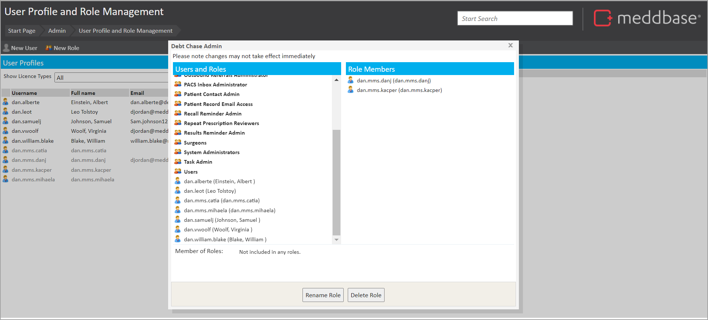
4. From the left-hand pane, find and click the desired user or group
The user or group will then be moved over to the Role Member section on the right-hand pane.
Once added to the group, they will have access to:
To do this:
1. From the Start page, select the Accounts tile
2. In the Accounts page, select Debt Management from the list in the bottom left of the screen
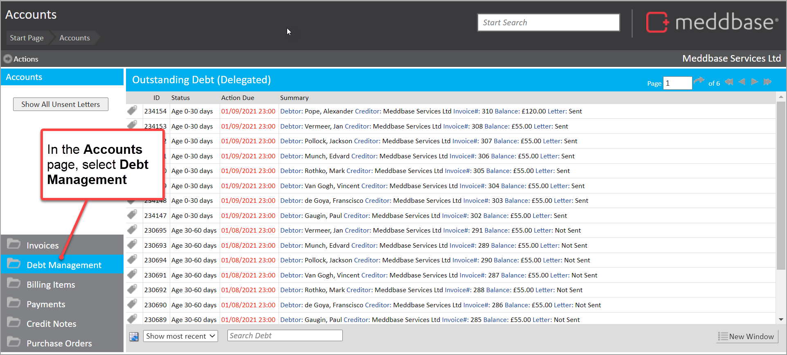
The Debt Management page is displayed showing all invoices with a balance outstanding.
There is a range of things you can see and do in the Outstanding Debt section of Accounts. These are described below.
When the Outstanding Debt window is presented, you can view a table of Outstanding Debt items.
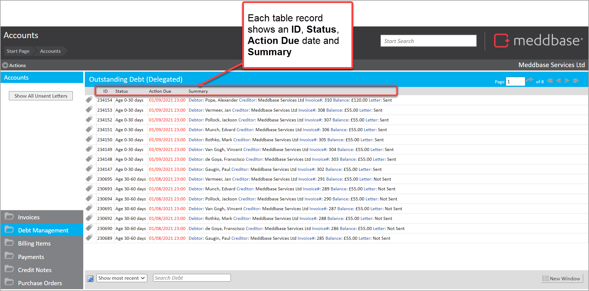
Each record displays an ID, Status, Action Due date and Summary. The summary in turn shows the Creditor, Debtor, Invoice No. and Balance.
You can click on an Outstanding Debt item. By doing this, you are presented with a Manage Debt dialog. Here you can see details of the invoice, including the debtor's contact details and an activity log for the invoice.
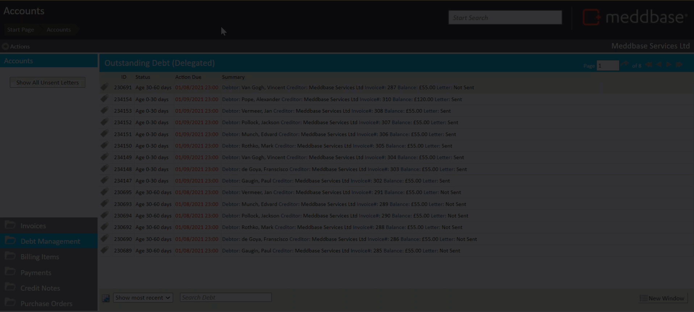
In this Manage Debt dialog, you can also export the invoice line items to csv.
You can click on Show All Unsent Letters, for these Outstanding Debts you can
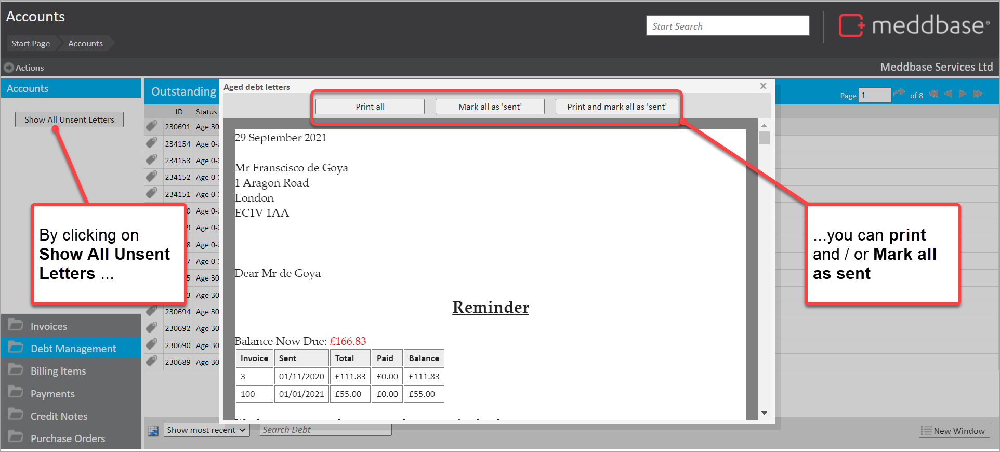
Enabling you to produce and print letters for debt chasing.
If needed, you can access the related Aged Debt templates on which these letters are based. To do you you:
1. Select the Templates tile
2. Select System templates
3. Navigate through and make a selection in Aged Debt Letters - [Company name]
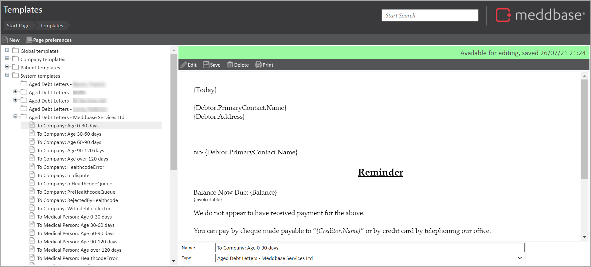
You can use different templates per debtor type (patient or company) and per debt age threshold.
Further articles explaining how to manage documents and document templates are available in the Document Management section of this help site.
You can use the navigation arrows to move the next, previous, last or first page of Outstanding Debt records.
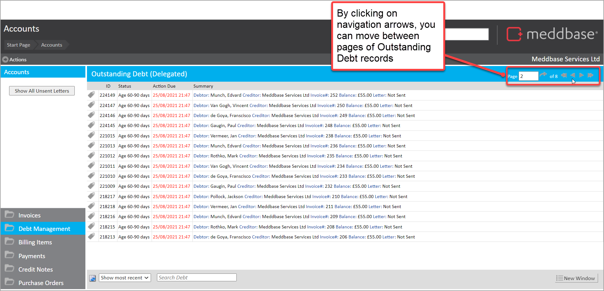
You can use the drop-down at the bottom of the screen to Show most recent items or Show next due items.
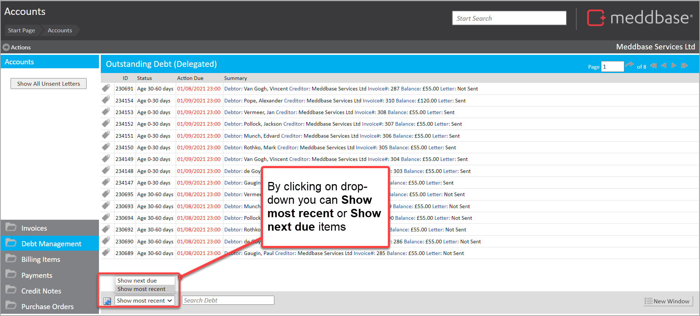
You can use the Search Debt field at the bottom of the screen to search Outstanding Debt records.
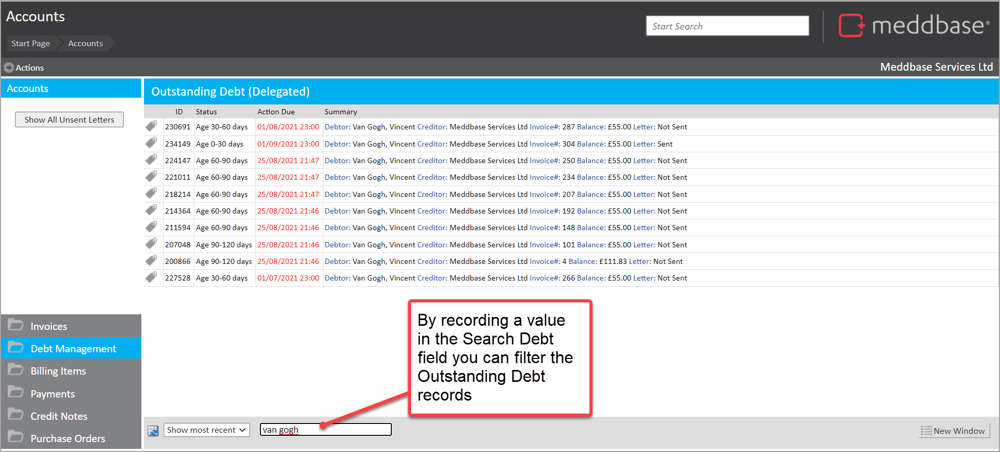
This can field for values in the Summary for an Outstanding Debt item.
You can select the export icon at the bottom of the screen. This exports the outstanding debt items to csv.
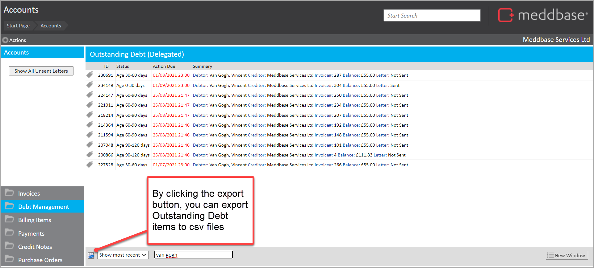
This exported list contains columns for:
You can click on the New Window button at the bottom right of the screen. This opens the Outstanding Debt records in a new screen without the left-hand panel.
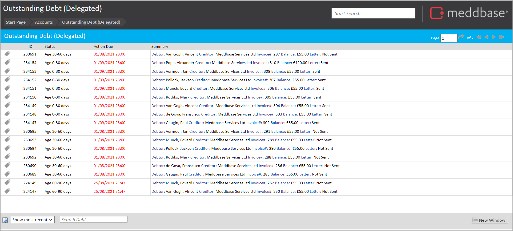
A lot of the functionality available in Debt Management can also be accessed via Outstanding Debt in Delegated work.